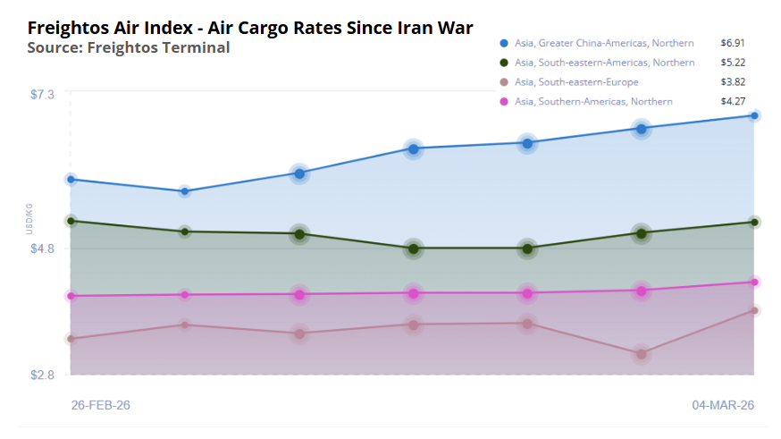

美以伊戰事下的中東航空停擺
2010年代起，中東樞紐成為連結亞歐非三大洲的關鍵節點，中東天空是全球最繁忙的航空十字路口之一。迪拜、多哈、阿布扎比等國際機場每日承載超過4,500個架次，串聯歐亞非三洲的中轉流量。2026年2月28日，美以對伊朗發動大規模軍事打擊。伊朗隨即向以色列發射導彈進行反擊，並宣布關閉本國領空。
國際民航組織（ICAO）發布最高級別警告，中東地區多國政府隨即宣布「禁止所有民航客機飛越伊朗及周邊衝突空域」。其他國家雖未直接成為戰場，但受導彈攔截作業以及安全考量等因素影響，大量進出該區域的國際航線被緊急取消或強制繞飛。中東核心空域關閉。
隨著有效運力驟減且飛行距離大幅增加，多條相關航線的空運運費在短時間內急劇攀升，物流成本顯著增加。大量旅客行程受阻，同時航空貨運艙位出現嚴重短缺。
客運影響
美以伊軍事衝突迫使中東多國關閉領空，迪拜國際機場等連結歐亞非三大洲的主要樞紐陷入停擺。2月28日，包括阿聯酋航空在內的多家航空公司緊急暫停所有往返航班，數以萬計的跨洲旅客行程受阻。
A · 每日取消率
下表呈現戰爭爆發前至爆發後五個中東主要機場的航班取消率變化，顏色越深代表取消率越高。02-28戰爭爆發當日，阿聯酋三港（DXB、DOH、AUH）取消率從不足1%急升至35–52%，次日達到100%完全停擺。數據採集於 2026-03-05。
| 國家 | 機場 | 02-26 | 02-27 | 02-28 戰爭爆發 | 03-01 | 03-02 | 03-03 | 03-04 | 戰前均值 | 戰後均值 |
|---|
B · 每日取消班次趨勢
下圖呈現五個中東主要機場每日取消航班數量的變化趨勢。戰爭爆發後，阿聯酋三港（DXB、DOH、AUH）取消班次呈斷崖式上升，次日達到峰值；沙特阿拉伯兩港（JED、RUH）則維持在較低水平。
航空貨運影響
貨運樞紐停擺
迪拜（DXB）、阿布扎比（AUH）及多哈（DOH）是亞歐非三大洲航空貨物的核心轉運節點。戰爭爆發後，速遞運輸公司FedEx 已暫停阿拉伯海灣地區所有貨運航班；全貨機運營商 Cargolux 取消所有中東航線（阿曼馬斯喀特除外）。
卡塔爾航空貨運（Qatar Airways Cargo）—全球最大的非快遞貨運航空公司—亦宣布運營暫停，因卡塔爾空域仍處於封鎖狀態。部分不經多哈的貨運航班仍在有限運行。阿聯酋航空已開始在少數航線上偶發性恢復貨運服務。
國際航空貨運協會（IATA）總幹事 Glyn Hughes 在3月4日的新聞發佈會上表示：「印度至歐洲約80%的貨物經中東過境，這意味著大量疫苗和藥品無法抵達歐洲。如果這種狀況持續數週，我們可以預計出現藥品短缺。」
運費攀升與燃油成本
由於航班繞飛導致載油量增加、可用載重下降，加之燃油成本飆升，航空運費正持續走高。上週全球航空燃油上漲3.6%至每桶99.40美元，美國噴氣燃油從每加侖2.50美元升至2.83美元。
多家航空公司正引入或考慮對途經衝突區域的貨物徵收戰爭風險附加費；DHL 集團在業績會上透露，其貨運代理部門本週可能實施緊急附加費。
供應鏈公司Seko Logistics 指出，承運商往往優先考慮人道主義援助、軍事貨物、易腐農產品、藥品、優質貨運和合同客戶，而非臨時預訂的一般貨物。

A · 主要航空貨運承運人應對狀況
下表匯總全球主要貨運航空公司及物流代理商在危機中的運營狀態與應對措施。中東三大樞紐（DXB、DOH、AUH）關閉導致Qatar Airways Cargo、Emirates SkyCargo等全球頂級貨運承運人被迫暫停或縮減運營。
| 承運人 | 類型 | 當前狀態 | 具體措施 |
|---|---|---|---|
| Qatar Airways Cargo | 全球最大非快遞貨運航空 | 全面暫停 | 部分不經多哈航線有限運行 |
| Emirates SkyCargo | 中東最大貨運航空 | 偶發性恢復 | 少數特定航線開始試運 |
| FedEx | 快遞 / 整合型承運人 | 阿拉伯海灣全面暫停 | 啟用替代路由繞飛中東 |
| Cargolux | 全貨機運營商 | 中東航線全取消 | 僅保留阿曼馬斯喀特（MCT）線路 |
| Kuehne+Nagel（代理） | 全球最大貨運代理 | 緊急包機應對 | 預警亞洲積壓，安排替代空運 |
| DHL Group（代理） | 整合型物流巨頭 | 考慮緊急附加費 | 貨代部門本週可能啟動緊急附加費 |
B · 替代航線與繞飛方案
下表列出貨運代理商為繞開中東封鎖空域所採用的替代運輸方案。這些方案普遍面臨運輸時間延長、成本上升的挑戰，部分方案（如馬爾代夫海空聯運）尚處於試行階段。
| 替代方案 | 適用航線 | 代價 / 限制 |
|---|---|---|
| 北方航路（阿富汗–高加索走廊） | 亞洲 → 歐洲 | 額外燃油消耗，載重下降；烏克蘭戰爭已封鎖俄羅斯空域，選擇有限 |
| 阿曼（MCT）過境 | 灣區貨物中轉 | 航空貨物可達利雅得（RUH），再由卡車配送至海灣各地 |
| 馬爾代夫海空聯運 | 亞洲出口 → 歐洲 | 中轉時間延長，成本上升 |
| 西安–塔什干卡車–空運 | 中國出口 → 歐洲 | DHL 特色服務；地面段耗時較長 |
| 中國/越南–洛杉磯海空聯運 | 亞洲出口 → 美國 | 繞開中東，但運輸週期延長 |
2026 美伊戰爭 · 事件時間線
2026.01 — 2026.03.06
中東空域 · 即時航班監測
即時數據：Flightera.net · 實時更新